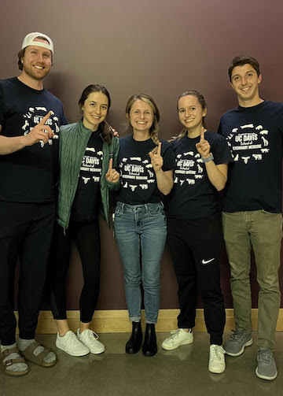

"Is your name a mix between Trevor and Kevin?" has been a question
asked by my peers for as long as I can remember.
Though it would have been an creative solution to two parents disagreeing on options
to name their child, my name actually originated from my father's lifelong connection
with his friend, Trevin Anderson.

Naturally, I would consider myself to be very extroverted, which almost always
reflects in the topics I'm passionate about, events I attend, and things I enjoy to
do in my free time. I'd consider my lifestyle to be one that embodies a balance between
outdoor, sporting activies and indoor activities that involve others.
With that said,
it is not unusual for me to go for a hike with my fiance and friends in the morning,
attend a group cooking class in the afternoon, and then end the day with a social event, sports
event viewing, or hosting a dinner for our family and friends.